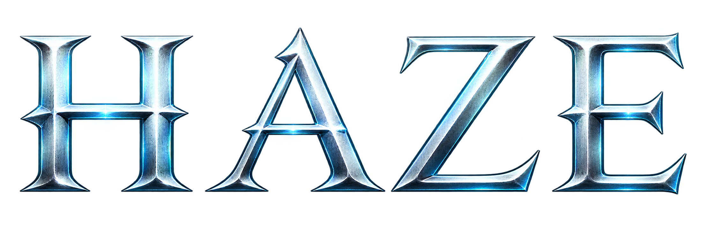
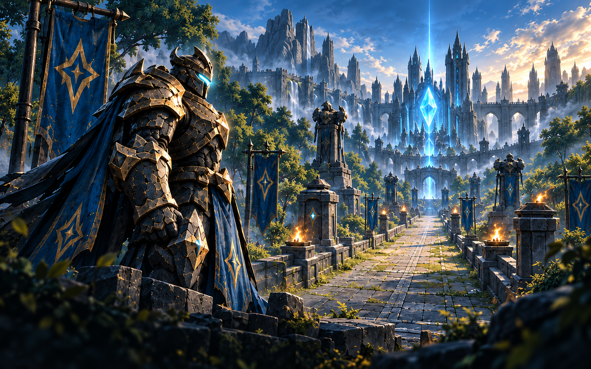
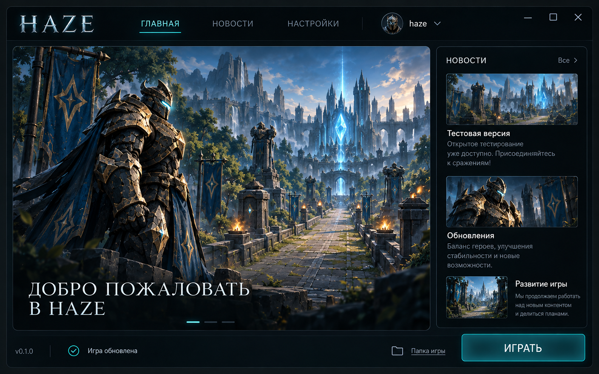
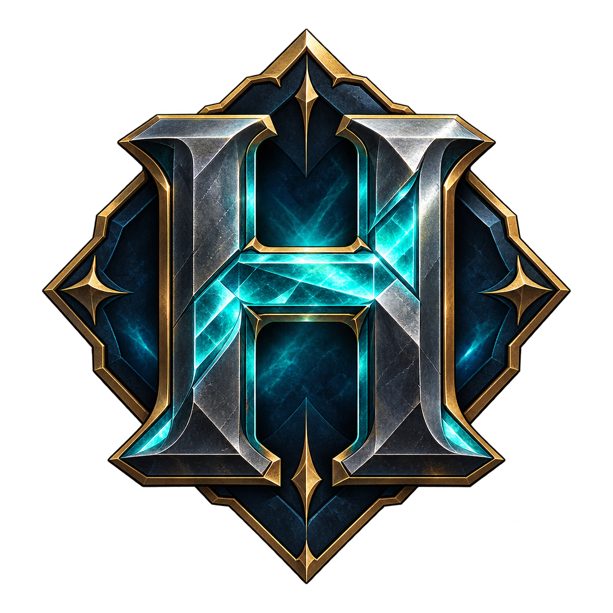

Соло
Тренировка
Освой героя, попробуй способности и собери предметы. Начни бой в своём темпе.
Начать знакомство
Скачать
Windows 10 / 11 · 64 бит
Халвек, гоблины, башни и трон.
Предметы и способности — под твой стиль игры.
Освой героя, попробуй способности и собери предметы. Начни бой в своём темпе.
Начать знакомствоСоздай комнату и отправь код. Подключайтесь через интернет или играйте в одной локальной сети.
Как подключиться
Лаунчер проверяет версию при запуске. Когда выйдет новая сборка, вместо «Играть» появится «Обновить».
Сохрани HazeLauncher.exe в удобной папке.
Дождись загрузки и проверки файлов.
Выбери тренировку или дуэль.
У обоих игроков должна быть одна актуальная версия Haze.

Открой «Дуэль 1 на 1» и выбери «P2P / АВТО». Создай комнату и отправь другу код EOS-. Друг выбирает тот же режим, вводит код и подключается. Epic Games Launcher и аккаунт Epic не нужны. Оба нажимают «Готов», затем хост запускает матч.
Выбери локальное подключение. Один игрок создаёт комнату, второй вводит локальный IPv4 хоста и тот же порт. Для двух окон на одном ПК используй 127.0.0.1. Затем оба нажимают «Готов».
Да. В главном меню выбери «Тренировка»: комната и второй игрок не нужны.
Нет. Открой этот же лаунчер и нажми «Обновить», когда выйдет новая версия. Перед обновлением закрой игру. Если загрузка прервётся, прежняя установка сохранится.